The Library
A thousand stories
The living archive of human becoming. Bright, honest stories of people finding their way home, gathered here so you can find yourself in them.
- 25conversations
- 10letters
- 1memoir
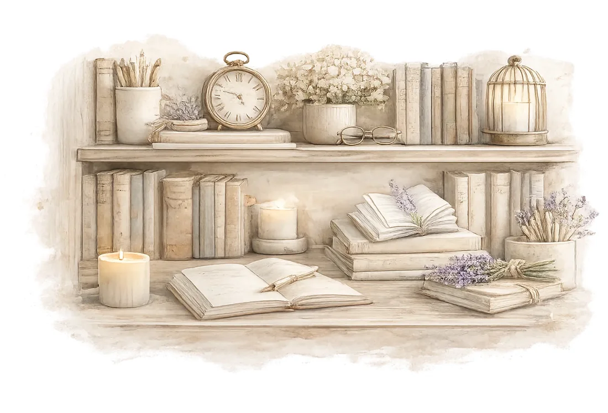
Search the shelves
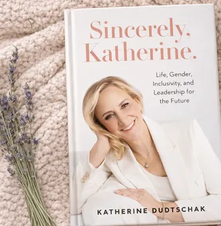
The memoirSincerely, Katherine.The first story on these shelves, and the seed of everything else here. Letter, November 10, 2026The black sheep.A few days ago, I was talking with a friend, someone I care about and deeply admire. We were…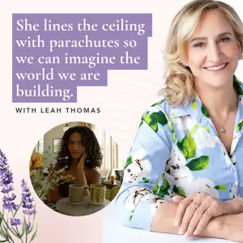
Conversation with Leah ThomasHow We Treat the Earth Mirrors How We Treat Each OtherNovember 6, 2026, 56 minutes Letter, November 3, 2026Running away from home…Remember wanting to run away from home? To escape something?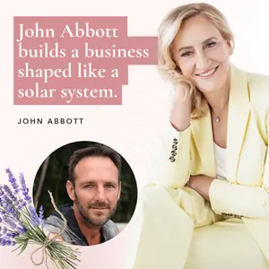
Conversation with John AbbottThe Perfection in the Perceived ImperfectionOctober 30, 2026, 1 hr 32 min Letter, October 27, 2026Human Uniqueness.This past Monday, I had the honour and privilege of joining the Human Resources Professionals… Conversation with Judy WicksBuilding the Beloved Community, One Fort at a TimeOctober 23, 2026, 1 hr 11 min
Letter, October 20, 2026Sacred.What does sacred mean? What is sacred?
Conversation with Judy WicksBuilding the Beloved Community, One Fort at a TimeOctober 23, 2026, 1 hr 11 min
Letter, October 20, 2026Sacred.What does sacred mean? What is sacred?
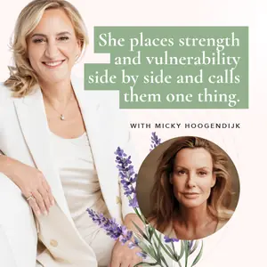
Conversation with Micky HoogendijkVulnerability Is the Strength, and the Art of Creating Space to Move ForwardOctober 15, 2026, 1 hr 22 min Letter, October 13, 2026Is this me?On a recent Friday evening at Decanter, my friend Karen Palmer was sitting at her typewriter… Conversation with Patricia GagicIn Gray Is Where All Potential WaitsOctober 8, 2026, 1 hr 28 min
Letter, October 6, 2026An exchange of love.This week, I had the honour of joining my friend Susan’s book club at her cottage north of…
Conversation with Patricia GagicIn Gray Is Where All Potential WaitsOctober 8, 2026, 1 hr 28 min
Letter, October 6, 2026An exchange of love.This week, I had the honour of joining my friend Susan’s book club at her cottage north of…
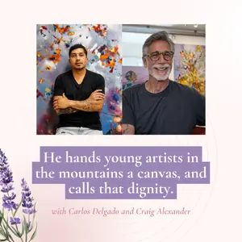
Conversation with Carlos Delgado and Craig AlexanderHe hands young artists in the mountains a canvas, and calls that dignity.October 1, 2026, 55 minutes Letter, September 29, 2026We love and live on: a life lived sincerely.A tribute to Cindy Clark of team Sincerely and her son, the late Corey Clark, September 26th… Conversation with Melissa BernsteinTurning the Chaos Within Into Light, One Life at a TimeSeptember 24, 2026, 1 hr 32 min
Letter, September 22, 2026A melody of unconditional beauty.The hibiscus flowers are blooming in the garden, and the roses are beginning to flower again…
Conversation with Melissa BernsteinTurning the Chaos Within Into Light, One Life at a TimeSeptember 24, 2026, 1 hr 32 min
Letter, September 22, 2026A melody of unconditional beauty.The hibiscus flowers are blooming in the garden, and the roses are beginning to flower again…
 Conversation with Eric FarewellBecoming a Billionaire in Time, and Building a Life Around LoveSeptember 18, 2026, 1 hr 7 min
Letter, September 15, 2026Lessons of Peter Pumpkinhead.I’m amazed by how music speaks to us.
Conversation with Eric FarewellBecoming a Billionaire in Time, and Building a Life Around LoveSeptember 18, 2026, 1 hr 7 min
Letter, September 15, 2026Lessons of Peter Pumpkinhead.I’m amazed by how music speaks to us.
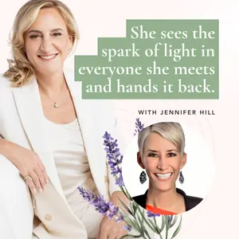
Conversation with Jennifer HillThe Spark of Light in Every Human We MeetSeptember 10, 2026, 1 hr 10 min Letter, September 8, 2026Never Alone.I grew up on my parents’ farm outside St. Marys, Ontario, Canada.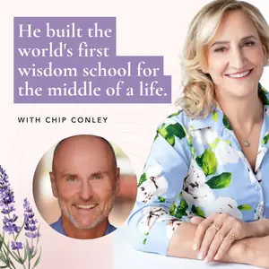
Conversation with Chip ConleyFrom Return on Investment to the Ripple of ImpactSeptember 4, 2026, 1 hr 13 min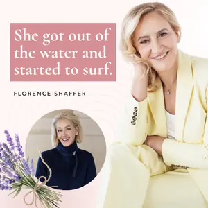
Conversation with Florence ShafferWhat if the real innovation is you? Building a coherent life before the collapseAugust 28, 2026, 1 hr 27 min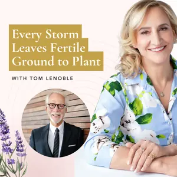
Conversation with Tom LeNobleEvery Storm Leaves Fertile Ground to PlantAugust 20, 2026, 1 hr 20 min Conversation with Master Mingtong GuComing Home to the Body, the Ground of All HealingAugust 13, 2026, 1 hr 22 min
Conversation with Master Mingtong GuComing Home to the Body, the Ground of All HealingAugust 13, 2026, 1 hr 22 min
 Conversation with Jem FullerCoherence Architect, Bringing Love Into the Workplace and Living From Essence1 hr 25 min
Conversation with Jem FullerCoherence Architect, Bringing Love Into the Workplace and Living From Essence1 hr 25 min
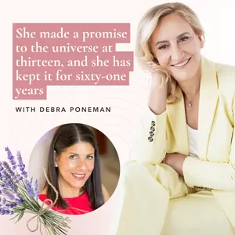
Conversation with Debra PonemanShe made a promise to the universe at thirteen, and she has kept it for sixty-one years.July 24, 2026, 1 hr 29 min Conversation with Dr. Robyne Hanley-DafoeShe exhaled in complete darkness and followed the bubbles home.July 9, 2026, 1 hr 11 min
Conversation with Dr. Robyne Hanley-DafoeShe exhaled in complete darkness and followed the bubbles home.July 9, 2026, 1 hr 11 min
 Conversation with Eila Park RobertsonThe Price of Peace Is Pain. There Is No Other Way Through.July 3, 2026, 1 hr 16 min
Conversation with Eila Park RobertsonThe Price of Peace Is Pain. There Is No Other Way Through.July 3, 2026, 1 hr 16 min
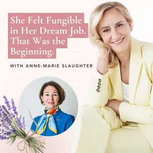
Conversation with Anne-Marie SlaughterShe Felt Fungible in Her Dream Job. That Was the Beginning.June 26, 2026, 1 hr 20 min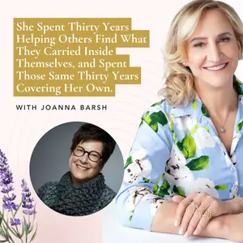
Conversation with Joanna BarshShe Started Therapy at 72. She Has Never Been More Alive.June 18, 2026, 1 hr 39 min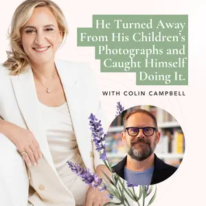
Conversation with Colin CampbellFinding the Words: Working Through Profound Loss with Hope and PurposeJune 11, 2026, 1 hr 17 min Conversation with Dr. John IzzoHe Took It Further Than His Father. He Hopes We Take It Further Still.June 04, 2026, 93 minutes Conversation with Sophie GrégoireYour Heart Cannot Break. It Can Only Break OpenMay 28, 2026, 65 minutes
Conversation with Sophie GrégoireYour Heart Cannot Break. It Can Only Break OpenMay 28, 2026, 65 minutes
 Conversation with Dr. Delphine Le SerreTeaching Children Who They Already AreMay 21, 2026, 92 minutes
Conversation with Dr. Delphine Le SerreTeaching Children Who They Already AreMay 21, 2026, 92 minutes
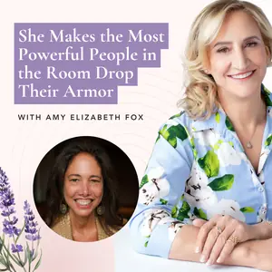
Conversation with Amy Elizabeth FoxBringing Love Into the Rooms Where Business Gets DoneMay 21, 2026, 54 minutes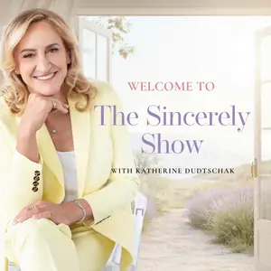
Conversation with Katherine DudtschakThe Woman Who Built SincerelyMay 21, 2026, 76 minutesSome stories are still being written. Some are waiting to be told. Some might be yours. There is always something new on the shelves.
This collection grows every week.
Join Katherine’s weekly letter and you will know when a new story reaches the shelves.